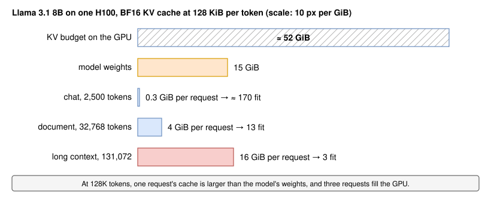
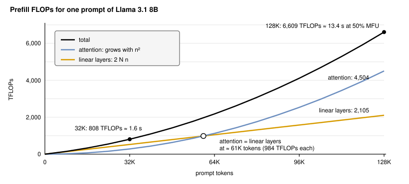
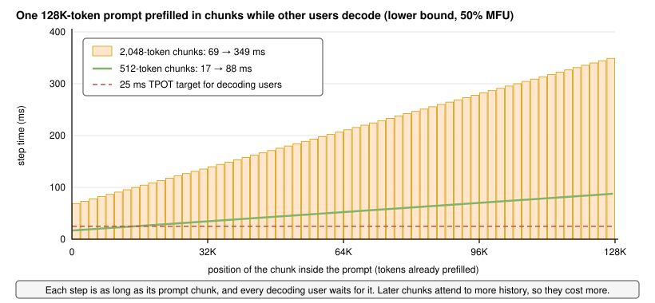
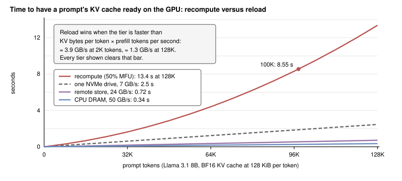
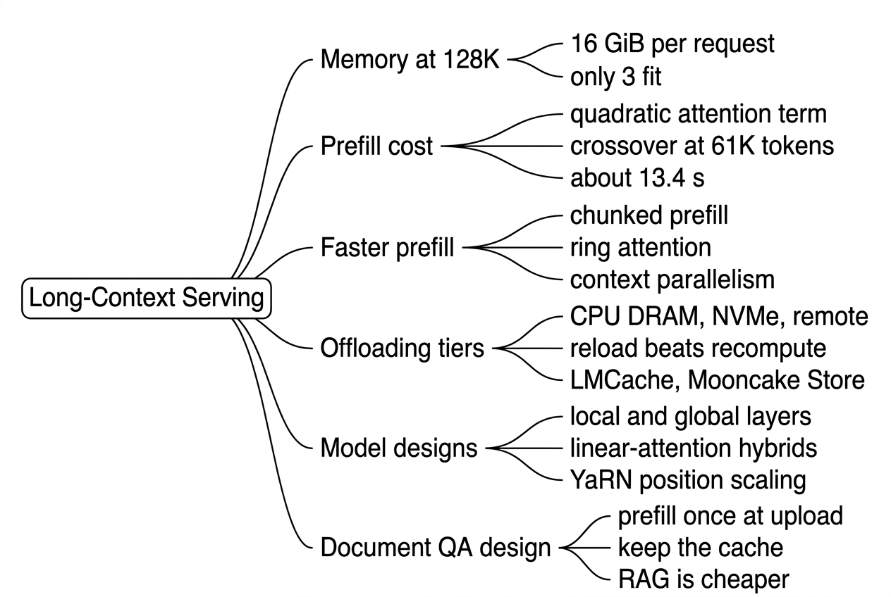

Long-Context Serving
Introduction
Llama 3.1 8B accepts prompts of up to 131,072 tokens, several hundred pages of text [1]. Products use that room: contract review, codebase questions, long agent transcripts, and chat histories that never get trimmed. A model that can read 128K tokens, though, is not the same as a server that can afford to. Almost every number from Stage 1 changes when the prompt grows by a factor of 50.
The KV cache grows in proportion to the prompt, so a single long request can take more GPU memory than the model's weights. Prefill gains a term that grows with the square of the prompt length, so time to first token stretches from tens of milliseconds to many seconds. And every decode step must read the whole cache again. Figure 1 shows the memory side for our running example on one H100.

In this lesson, we quantify what changes at 128K tokens, look at the techniques that make long prompts fast enough (chunked prefill and context parallelism), show when it pays to keep long caches in cheaper memory and reload them, survey models designed for long context, and finish with the cost decision between long context and retrieval, how to price it, and a design for a document question-answering product.
Clarifying the Problem
This lesson deliberately uses a different scenario from the chat running example: a product whose prompts are long documents. Here is a typical exchange:
Candidate: What is the product, and how long are the inputs?
Interviewer: A contract-review assistant. Users upload contracts and reports of about 100,000 tokens and ask questions about them.
Candidate: How do users interact with a document?
Interviewer: They upload, read for a minute or two, then ask about five questions over the next 20 minutes. Answers are about 300 tokens.
Candidate: Which model and hardware?
Interviewer: Llama 3.1 8B Instruct, which supports 128K tokens, on H100 GPUs. Assume $3.00 per H100-hour.
Candidate: What latency do users expect?
Interviewer: Each answer should start within 2 seconds of the question, and stream at least as fast as the course's usual 25 ms per token.
Candidate: Have you tried retrieval instead of sending the whole document?
Interviewer: A retrieval prototype was cheaper but missed answers that combine distant clauses, such as a definition on page 3 and an exception on page 140.
The question underneath is: what does a 100K-token request really cost in memory, compute, and latency, and how do we design the serving system so that users get fast answers without paying for the whole document on every question?
What Changes at 128K Tokens
The KV cache dominates memory
Llama 3.1 8B stores 128 KiB of keys and values per token in BF16 (Lesson 3, KV Cache). A 131,072-token request therefore needs 131,072 × 128 KiB = 16 GiB of cache, and a 100,000-token document about 12.2 GiB (13.1 GB). With about 52 GiB left for the cache on an H100, three 128K-token requests or four 100K-token documents fill the GPU, against about 170 chat requests. An FP8 cache halves the cost per token and doubles these counts to six and eight.
Capacity is only half of the problem. Each decode step reads every cached token of every running request. With three 128K-token requests, a step reads 16 GB of weights plus 3 × 17.2 GB of cache, about 67.6 GB, which takes at least 20.2 ms. The GPU then produces 3 tokens per 20.2 ms, about 149 tokens per second in total, compared with about 2,500 tokens per second for chat traffic at our latency targets (Lesson 19, GPU Utilization). The 20.2 ms lower bound leaves little room under the 25 ms target, and the GPU serves very few streams.
Prefill gains a quadratic term
Lesson 2, Prefill vs Decode, counted about two FLOPs per parameter per token plus an attention term that grows with the context. Summed over a whole prompt of tokens with causal masking, where the average token attends to about earlier ones:
The first term is the linear layers and the second is attention. Here is the parameter count (8.03 billion), the number of layers (32), and the total width of the query heads (32 × 128 = 4,096). The attention term equals the linear term when tokens. Beyond that, attention costs more than the rest of the model, as Figure 2 shows.

For a full 131,072-token prompt, the linear layers need 2,105 TFLOPs and attention 4,504, a total of about 6,609 TFLOPs. At an assumed 50% MFU on an H100 (about 495 TFLOPS), that is a time to first token of about 13.4 seconds before any queueing. A 100,000-token document needs about 4,227 TFLOPs, or 8.55 seconds. FlashAttention keeps this attention work compute-bound rather than memory-bound (Lesson 33, GPU Architecture and Attention Kernels), but it cannot remove the FLOPs. The effective prefill rate falls from about 30,000 tokens per second for chat prompts to about 9,800 at 128K.
Know the crossover: for Llama 3.1 8B, attention FLOPs pass the linear layers at about 61K tokens, so a 128K prompt costs about three times what the "2 × parameters × tokens" rule predicts. Saying this shows you know where the rule of thumb breaks.
Making Long Prompts Fast Enough
Chunked prefill at long lengths
Chunked prefill splits a long prompt into pieces that share each engine step with ongoing decodes, so running users keep receiving tokens (Lesson 7, Continuous Batching) [2]. At 128K tokens, a new effect appears: chunks are not equally expensive. Every chunk attends to all the tokens before it, so the last chunk of a long prompt costs far more than the first. For a chunk of tokens starting at position , the step needs about FLOPs.

Figure 3 and Table 1 show the consequence for users who are decoding on the same GPU. With the common 2,048-token budget, steps grow from 69 ms to 349 ms as the prompt advances, so every running stream sees gaps of a third of a second. Even 512-token chunks reach 88 ms by the end of the prompt. Smaller chunks also lose efficiency: each step re-reads the weights, and small matrix multiplies run below 50% MFU, so the long request's own TTFT grows.
| Chunk size | Steps for 128K | First step | Last step | TTFT of the long prompt |
|---|---|---|---|---|
| 8,192 tokens | 16 | ≈ 302 ms | ≈ 1,369 ms | ≈ 13.4 s |
| 2,048 tokens | 64 | ≈ 69 ms | ≈ 349 ms | ≈ 13.4 s, more in practice |
| 512 tokens | 256 | ≈ 17 ms | ≈ 88 ms | ≈ 13.4 s, noticeably more in practice |
Table 1: Prefilling one 131,072-token prompt in chunks on one H100 (compute lower bounds at 50% MFU; decodes in the same step add a little more)
Engines offer some help. vLLM's --max-num-batched-tokens sets the per-step budget, and --long-prefill-token-threshold caps how much of it one long prompt may take [3]. SGLang can shrink later chunks as the context grows (dynamic chunking) when it splits long prompts across pipeline stages [4]. But the arithmetic is unforgiving: on a GPU that also serves streaming users, a 128K prefill either stalls them or takes much longer. Long-context services therefore often give long prompts their own pool, or separate prefill from decode entirely (Lesson 34, Disaggregated Prefill and Decode).
Context parallelism across GPUs
Thirteen seconds to the first token is too slow for many products. The prefill work itself must be split. Tensor parallelism (Lesson 18) splits each layer's weights; context parallelism (CP) splits the sequence: each GPU holds a slice of the prompt's tokens, computes the linear layers for its own tokens, and cooperates only in attention, where each query needs keys and values from earlier slices.
Ring attention organizes that cooperation [5]. The GPUs form a ring. At each step, every GPU computes attention between its local queries and the KV block it currently holds, while it sends that block to its neighbor and receives the next one. After as many steps as there are GPUs, every query has seen every key, and online softmax merges the partial results exactly, the same algebra FlashAttention uses within one GPU. With causal masking, later tokens do more work, so implementations split the sequence into twice as many chunks as GPUs and give GPU chunks and , balancing early and late tokens [6]. Figure 4 shows four GPUs.
![Four GPU boxes arranged in a square. GPU 0 holds query and KV chunks 0 and 7, GPU 1 holds 1 and 6, GPU 2 holds 2 and 5, and GPU 3 holds 3 and 4. Arrows labeled KV pass blocks from GPU 0 to 1 to 2 to 3 and back to 0. A side panel lists the steps: attend local queries to the held KV block, send it on while receiving the next, and after four steps every query has seen every earlier key. A note gives about 13.4 seconds on one H100 falling to about 3.7 seconds on four GPUs at an assumed 90% scaling efficiency.](images/036-ring-attention.svg)
Meta's study of context parallelism for inference reports the scale this reaches: a 1M-token prefill of Llama 3 405B in 77 seconds and a 128K-token prefill in 3.8 seconds, on 16 nodes of 8 H100s each, with 93% parallelization efficiency and 63% FLOPS utilization [6]. Two of its findings matter for design. Passing keys and values (pass-KV) suits full prefill, because with GQA the KV blocks are much smaller than the queries; passing queries (pass-Q) suits decode and prompts whose cache is mostly already present. And across nodes, CP scaled better than tensor parallelism, because it communicates only in attention layers and moves smaller KV tensors over slower inter-node links [6].
The vocabulary is confusing, so be precise in an interview. DeepSpeed-Ulysses also splits the sequence but uses all-to-all exchanges so that each GPU computes full attention for a subset of heads [7]. Megatron's sequence parallelism is a different thing: it shards the activations of normalization and dropout along the sequence inside a tensor-parallel group to save memory [8].
Engine support is still settling. vLLM documents decode context parallelism (-dcp), which shards the KV cache along tokens inside a tensor-parallel group to avoid duplicating it, and has a --prefill-context-parallel-size (-pcp) option that splits prefill computation across ranks; its deployment guide notes that the prefill approaches are still under active development [3][9]. SGLang splits long prompts across pipeline stages with chunked pipeline parallelism [4]. For an 8B model on a single NVLink node, plain tensor parallelism also cuts prefill time roughly in proportion to the GPU count and is the simpler first step; CP earns its complexity at hundreds of thousands of tokens or across nodes.
Keeping Long Caches Around: Offloading
The memory tiers
A 100K-token document costs 8.55 seconds of H100 compute to prefill. If the same user asks five questions about it, recomputing the cache each time wastes 34 of those seconds. Prefix caching keeps the cache in GPU memory between questions (Lesson 24, Prefix Caching), but at 12.2 GiB per document, HBM holds only four. The natural answer is to move idle caches to cheaper, larger memory and bring them back when the next question arrives. Figure 5 lists the tiers on an 8-GPU H100 server.
![A table of tiers. GPU HBM: 80 GB per GPU, 3.35 TB/s, already resident. CPU DRAM: 2 TB per 8-GPU node or about 250 GB per GPU, PCIe Gen5 x16 at 64 GB/s peak with about 50 GB/s assumed, 0.26 seconds. Local NVMe: 8 drives of 3.84 TB, an assumed 20 GB/s for the array, 0.66 seconds. Remote KV store over RDMA: pooled DRAM and SSD across nodes, about 24 GB/s per 400 Gb/s NIC as measured by Mooncake, 0.55 seconds. Recompute: no storage, 989 TFLOPS at 50% MFU, 8.55 seconds, drawn as a much longer red bar.](images/036-offload-tiers.svg)
The capacities come from NVIDIA's DGX H100 specification: 2 TB of system memory and eight 3.84 TB NVMe drives per 8-GPU node [10]. Each H100 SXM connects to the host over PCIe Gen5, 128 GB/s in both directions combined, or 64 GB/s each way [11]; we assume about 50 GB/s in practice. For the network, Mooncake's transfer engine reports up to 190 GB/s over eight 400 Gb/s RoCE NICs, about 24 GB/s per NIC [12]. NVMe throughput varies by drive and filesystem, so the 20 GB/s for the array is an assumption to replace with a measurement.
When reloading beats recomputing
Reloading wins when moving a token's cache is faster than recomputing it. Recomputing runs at the prefill rate tokens per second; reloading at bandwidth moves tokens per second, where is the KV bytes per token. The break-even bandwidth is:
For Llama 3.1 8B in BF16, = 128 KiB. At 2,000-token prompts, ≈ 30,000 tokens per second, so any tier faster than about 3.9 GB/s beats recomputing. At 128K tokens, falls to about 9,800 tokens per second because of the quadratic attention term, and the bar drops to about 1.3 GB/s. Long prompts make reloading more attractive, not less. Figure 6 plots the comparison.

Worked through for our product, with the cache in FP8 (6.55 GB per document): reloading from CPU memory takes about 0.13 seconds, from the remote store about 0.27 seconds, against 8.55 seconds of recompute. Three practical points temper the arithmetic. Transfers can overlap with computation layer by layer, so part of the load hides behind other work. The PCIe link is shared by every request on that GPU, so many simultaneous reloads queue behind each other. And the cache must actually be found: a follow-up question routed to a different server finds nothing (Lesson 25, Request Routing). The same reasoning favors larger models even more: a 70B model spends about nine times more compute per token while its cache is only 2.5 times larger per token, so reloading wins by a wider margin.
Tools for offloading and sharing
- vLLM native offloading:
--kv-offloading-sizesets a CPU buffer in GiB and--kv-offloading-backendselects the implementation (nativeby default) [3]. - LMCache: a KV cache layer that stores caches in CPU memory, local disk, and remote backends such as Redis, Mooncake, or S3-compatible storage, and shares them across engine instances; it plugs into vLLM through its KV connector interface [13].
- Mooncake Store: the distributed KV cache store from Moonshot AI's Mooncake architecture, which serves Kimi with a disaggregated, cache-centric design [12][14]. It turns per-instance caches into a cluster-wide pool and serves as a backend for vLLM, SGLang, and LMCache [12].
- SGLang HiCache: extends SGLang's radix-tree cache to host memory (
--enable-hierarchical-cache,--hicache-ratio) and an optional storage backend such as Mooncake (--hicache-storage-backend) [15].
Models Built for Long Context
Cheaper attention by design
Everything so far assumed full attention in every layer, the Llama design. Newer model families change the architecture so that long contexts cost less, as Figure 7 summarizes. Like GQA, these are choices made at training time; a serving team gets them by choosing the model.
![Four panels. Full attention: every layer keeps every token; Llama 3.1 8B needs 16 GiB per sequence at 128K. Local plus global: global layers keep everything, local layers only the last w tokens; gpt-oss-120b uses a 128-token window in half its layers for 4.5 GiB at 128K, and Gemma 3 uses 5 local layers per global layer with a 1,024-token window. Linear-attention hybrid: a few softmax layers keep every token while most layers carry a fixed-size state; MiniMax-01 and Kimi Linear report up to 75% less KV cache. Sparse selection: every layer stores everything but each query reads only a few selected tokens, as in DeepSeek-V3.2 and Native Sparse Attention.](images/036-attention-designs.svg)
- Local and global layers: most layers attend only to a recent window, a few to everything. Gemma 3 uses five local layers with a 1,024-token window per global layer; in its ablations, local layers with a 1,024-token window cut the KV cache memory overhead at 32K tokens from about 60% to under 15% [16]. gpt-oss-120b alternates full layers with 128-token windowed layers; with 8 KV heads of dimension 64, its full layers need 36 KiB per token, so a 128K sequence needs about 4.5 GiB [17].
- Linear-attention hybrids: most layers replace softmax attention with a recurrent or linear form whose state does not grow with the context, and a minority keep full attention. MiniMax-01 combines lightning attention with mixture-of-experts layers and handles up to 4 million tokens at inference [18]; Kimi Linear reports up to 75% less KV cache and up to 6 times the decoding throughput at 1M tokens [19].
- Sparse attention: each query attends to a selected subset of earlier tokens. DeepSeek-V3.2's DeepSeek Sparse Attention uses a lightweight indexer to pick the tokens each query reads [20]; Native Sparse Attention combines compressed and selected tokens and reports large speedups at 64K tokens [21]. The cache still grows, but reads and FLOPs per token do not.
For serving, these designs move the crossover points in this lesson. With few full-attention layers, the quadratic prefill term shrinks by the same factor, capacity per GPU rises several times, and decode steps read far less. They also need kernel and engine support; check the engine's model support before planning around one.
Stretching the context: position scaling
Most models encode position with rotary embeddings (RoPE), which rotate queries and keys by angles that depend on position [22]. A model trained on 8K tokens has never seen the angles of position 100,000. Position scaling methods rescale the rotation frequencies so that long positions map onto angles the model knows, followed by a short fine-tune on long data. YaRN does this with frequency-dependent scaling and reports needing 10 times fewer tokens and 2.5 times fewer training steps than earlier methods [23]. Llama 3.1 ships its own variant: its configuration scales RoPE by a factor of 8 from an original 8,192 positions to 131,072 [29]; gpt-oss uses YaRN with a factor of 32 from 4,096 [17]; Gemma 3 rescales by 8 to go from 32K to 128K [16].
A supported context length is a ceiling, not a guarantee of quality. The RULER benchmark found that only about half of 17 models claiming 32K or more kept satisfactory performance at 32K [24], and models tend to use information at the start and end of a long input better than in the middle [25]. Before relying on 100K-token prompts, evaluate the model on your own long documents.
Long Context, Retrieval, and Price
Long context versus retrieval as a cost decision
Retrieval-augmented generation (RAG) splits documents into passages, embeds them, and sends only the passages most similar to each question [26]. Long context sends everything. The choice is usually framed as quality versus convenience, but it is also a cost decision that we can compute. Table 2 compares three designs for one document with five questions, using the same lower-bound model as before: prefill at 50% MFU, decode at full bandwidth with an FP8 cache, and RAG prompts of 8,000 tokens.
| Design | GPU-seconds per document | Cost per document | Time to first token per question | Risk |
|---|---|---|---|---|
| A. Full document with every question, no reuse | ≈ 46.6 | ≈ $0.039 | ≥ 8.6 s every time | None on quality; slow and expensive |
| B. Full document, cache prefilled once and kept | ≈ 12.5 | ≈ $0.010 | ≈ 0.15 s; the first also waits 8.6 s unless prefilled at upload | Cache must be stored and found |
| C. RAG, 8,000-token prompts | ≈ 2.1 | ≈ $0.002 | ≈ 0.3 s | Misses answers that span distant passages |
Table 2: One 100K-token document, five questions with 300-token answers, at an assumed $3.00 per H100-hour (lower bounds; real costs are higher for every option)
Keeping the cache cuts the cost of full-context answers by almost four times, because the document is processed once instead of five times. Retrieval is still about six times cheaper again, since each answer reads 8,000 tokens of cache instead of 100,000. The interviewer has already told us retrieval misses cross-references, which is exactly the failure that would make users stop trusting a contract tool, so the extra cost buys the product's core value. Products with shallower questions over huge corpora, such as support search over thousands of manuals, make the opposite choice.
Pricing long-context requests
Per token, long requests cost more to serve, and output tokens much more than input tokens. Table 3 converts this lesson's numbers into GPU cost per million tokens on one H100.
| Chat (2,000-token prompts) | 128K-token prompts | |
|---|---|---|
| Prefill rate (50% MFU) | ≈ 29,800 tokens/s | ≈ 9,800 tokens/s |
| GPU cost per million input tokens | ≈ $0.028 | ≈ $0.085 (3×) |
| Concurrent decodes per H100 (BF16 cache) | ≈ 53 at our targets | 3 |
| Output tokens per second per H100 | ≈ 2,520 | ≈ 149 |
| GPU cost per million output tokens | ≈ $0.33 | ≈ $5.60 (17×) |
Table 3: GPU cost per token for chat versus 128K-token requests (assume $3.00 per H100-hour; chat decode figures from Lesson 19's model)
Input tokens cost about three times more at 128K because of the attention term; output tokens cost about 17 times more because the cache, not the weights, limits how many streams share each decode step. Commercial APIs reflect this, though more gently: at the time of writing, Google lists Gemini 2.5 Pro at $1.25 per million input tokens and $10 per million output tokens for prompts up to 200K tokens, and $2.50 and $15 above that [27]. A self-hosted service has three levers: charge per token with a long-context tier, discount cached input tokens because a reused cache costs only a reload (Lesson 20, Cost per Million Tokens), and cap or meter the decode time a long request holds its cache.
Which design fits our deployment?
We choose design B, full context with the cache prefilled once and kept, organized as Figure 8 shows.
![An upload goes to an ingest pool of prefill-only GPUs that uses large chunks and spends about 8.6 seconds of H100 time per document, then saves the cache to a KV cache store. The store holds about 38 documents per GPU in CPU DRAM in FP8 and thousands more on NVMe or a remote pool such as Mooncake Store or LMCache, at 6.55 GB per document. Questions go through a router with document affinity to an answer pool that runs an FP8 KV cache and prefix caching with about 8 documents decoding per H100; it loads the cache in about 0.13 seconds and streams the answer. Notes say the document is prefilled at upload while the user reads, long prefills never stall anyone's decode, and each question prefills only about 100 tokens, about 14 ms, for about 12.5 GPU-seconds per document in all.](images/036-docqa-design.svg)
- Prefill at upload, on separate GPUs: the 8.6-second prefill runs while the user is still reading, so the first question does not wait for it. Because the ingest pool serves no streaming users, it can use large chunks for efficiency, and its long prefills never stall anyone's decode, the problem Table 1 showed (Lesson 34, Disaggregated Prefill and Decode).
- Store caches in tiers: in FP8, each document's cache is 6.55 GB. CPU memory holds about 38 per GPU for active sessions; NVMe or a shared store such as Mooncake Store or LMCache keeps older ones for returning users.
- Route by document: the router sends every question about a document to the answer server that holds or can fastest load its cache (Lesson 25, Request Routing).
- Answer from the cache: each question costs a 0.13-second load from CPU memory and a 14 ms prefill of the question, well inside the 2-second target. About eight documents decode together per H100 at a 20 ms lower bound per step; we confirm the 25 ms target holds under load and lower the concurrency if it does not.
We revisit the choice in three cases: if most uploads never get a question (ingest-time prefill would then be wasted, so we would prefill on the first question instead), if volume grows to the point where the cost gap to RAG matters, in which case a hybrid that routes local questions to RAG and whole-document questions to full context could cut cost, or if a model with local-global or hybrid attention passes our long-document evaluation, which would raise capacity per GPU several times.
In Practice
The first tab reproduces this lesson's numbers: prefill time and cache size by prompt length, the cost of the last chunk of a 128K prompt, and the per-document cost of designs A and B. The second starts vLLM for long documents with an FP8 cache, a small prefill budget, and CPU offloading [3]. The third starts SGLang with HiCache and a Mooncake storage backend [15].
"""Long-context cost model for Llama 3.1 8B on one H100 SXM (lower bounds)."""
PARAMS = 8.03e9
LAYERS, Q_HEADS, HEAD_DIM = 32, 32, 128
KV_BYTES_PER_TOKEN = 131_072 # BF16 (Lesson 3); 65,536 in FP8
PEAK_FLOPS, MFU = 989e12, 0.5 # dense BF16; assumed prefill efficiency
HBM_BW = 3.35e12 # bytes per second
KV_BUDGET = 52 * 2**30 # bytes left for the KV cache (Lesson 3)
PRICE_PER_GPU_SECOND = 3.00 / 3600 # assume $3.00 per H100-hour
ATTN_FLOPS = 4 * LAYERS * Q_HEADS * HEAD_DIM # per (query token, context token) pair
def prefill_seconds(prompt: int, cached: int = 0) -> float:
"""Compute time to prefill `prompt` tokens when the first `cached` are already in the KV cache."""
new = prompt - cached
linear = 2 * PARAMS * new
attention = ATTN_FLOPS * new * (cached + new / 2) # causal: average context
return (linear + attention) / (PEAK_FLOPS * MFU)
def decode_step_seconds(batch: int, context: int, kv_bytes: int = KV_BYTES_PER_TOKEN) -> float:
return (2 * PARAMS + batch * context * kv_bytes) / HBM_BW
def reload_seconds(tokens: int, bandwidth: float, kv_bytes: int = KV_BYTES_PER_TOKEN) -> float:
return tokens * kv_bytes / bandwidth
for n in (2_500, 32_768, 100_000, 131_072):
fit = KV_BUDGET // (n * KV_BYTES_PER_TOKEN)
print(f"{n:>7,} tokens: prefill {prefill_seconds(n):6.2f} s, "
f"KV {n * KV_BYTES_PER_TOKEN / 2**30:5.2f} GiB, {fit:>3} fit, "
f"reload from CPU at 50 GB/s {reload_seconds(n, 50e9):.2f} s")
# 131,072 tokens: prefill 13.36 s, KV 16.00 GiB, 3 fit, reload 0.34 s
for chunk in (8_192, 2_048, 512): # the last chunk of a 128K prompt attends to everything before it
last = prefill_seconds(131_072, cached=131_072 - chunk)
print(f"chunks of {chunk:>5,}: last prefill step >= {last * 1e3:6.1f} ms")
# 1368.9 ms, 348.9 ms, 87.6 ms
# Document QA: one 100K-token document, 5 questions of 100 tokens, 300-token answers,
# FP8 KV cache with 8 documents decoding together.
doc, question, answer, streams = 100_000, 100, 300, 8
answer_gpu_s = answer * decode_step_seconds(streams, doc, KV_BYTES_PER_TOKEN // 2) / streams
no_reuse = 5 * (prefill_seconds(doc + question) + answer_gpu_s)
reuse = prefill_seconds(doc) + 5 * (prefill_seconds(doc + question, cached=doc) + answer_gpu_s)
for name, gpu_s in (("no cache reuse", no_reuse), ("cache kept", reuse)):
print(f"{name:>14}: {gpu_s:5.1f} GPU-seconds per document, ${gpu_s * PRICE_PER_GPU_SECOND:.4f}")
# no cache reuse: 46.6 GPU-seconds ($0.0389); cache kept: 12.5 GPU-seconds ($0.0104)Other Talking Points
If there is extra time at the end of the interview, here are some additional talking points:
- Why decode attention at long context needs split-KV kernels: one request with a 128K cache gives too few thread blocks to fill an H100 otherwise (Lesson 33, GPU Architecture and Attention Kernels) [28].
- Token eviction and compression methods such as SnapKV and StreamingLLM, which shrink a long prompt's cache at some risk to recall (Lesson 3, KV Cache).
- Prompt caching in commercial APIs, which charges less for cached input tokens and reflects the reload-versus-recompute economics of this lesson [27].
- How decode with context parallelism scales: Meta's study found per-token decode latency rising from about 46 ms on one node to about 71 ms with four-way CP at 128K, so CP mainly helps prefill [6].
- Why autoscaling on request count fails for long-context traffic, and why KV cache usage is the better signal (Lesson 22, Autoscaling).
- How to set
--max-model-len: a lower limit lets the scheduler admit more requests with confidence and protects the service from a few enormous prompts. - Evaluating long-context quality with needle-in-a-haystack tests and harder multi-hop benchmarks such as RULER, and why both are needed [24].
Summary

- At 128 KiB per token, a 128K-token request of Llama 3.1 8B needs 16 GiB of KV cache; only three fit on an H100, and each decode step reads about 68 GB.
- Prefill FLOPs are 2Nn plus an attention term in n². For Llama 3.1 8B attention overtakes the linear layers at about 61K tokens, and a 128K prompt takes about 13.4 s at 50% MFU.
- Chunked prefill protects other users less at long lengths, because later chunks attend to more history: 2,048-token chunks grow from 69 ms to 349 ms per step. Context parallelism (ring attention) splits the prefill across GPUs.
- Reloading a cache beats recomputing it whenever the tier is faster than about 1.3–3.9 GB/s. CPU memory reloads a 100K-token cache in about 0.26 s against 8.55 s of prefill; LMCache, Mooncake Store, and SGLang HiCache manage the tiers.
- Local-global, linear-hybrid, and sparse attention models cut long-context cost by design; position scaling such as YaRN extends context, but quality must be evaluated.
- For document QA with 100K-token inputs, prefilling once and keeping the cache costs about a quarter of resending the document and keeps every answer's first token near 0.15 s; RAG is cheaper still but misses answers that span distant passages.
Reference Material
[1] Llama Team, AI @ Meta. The Llama 3 Herd of Models. https://arxiv.org/abs/2407.21783.
[2] Agrawal et al. Taming Throughput-Latency Tradeoff in LLM Inference with Sarathi-Serve. https://arxiv.org/abs/2403.02310.
[3] vLLM documentation: Engine Arguments. https://docs.vllm.ai/en/latest/configuration/engine_args/.
[4] SGLang documentation: Pipeline Parallelism for Long Context. https://docs.sglang.io/advanced_features/pipeline_parallelism.html.
[5] Liu, Zaharia, and Abbeel. Ring Attention with Blockwise Transformers for Near-Infinite Context. https://arxiv.org/abs/2310.01889.
[6] Yang et al. Context Parallelism for Scalable Million-Token Inference. https://arxiv.org/abs/2411.01783.
[7] Jacobs et al. DeepSpeed Ulysses: System Optimizations for Enabling Training of Extreme Long Sequence Transformer Models. https://arxiv.org/abs/2309.14509.
[8] Korthikanti et al. Reducing Activation Recomputation in Large Transformer Models. https://arxiv.org/abs/2205.05198.
[9] vLLM documentation: Context Parallel Deployment. https://docs.vllm.ai/en/latest/serving/context_parallel_deployment.html.
[10] NVIDIA DGX H100 User Guide: Introduction to the NVIDIA DGX H100 System. https://docs.nvidia.com/dgx/dgxh100-user-guide/introduction-to-dgxh100.html.
[11] NVIDIA. H100 Tensor Core GPU. https://www.nvidia.com/en-us/data-center/h100/.
[12] Mooncake: Transfer Engine and Mooncake Store. https://github.com/kvcache-ai/Mooncake.
[13] LMCache documentation. https://docs.lmcache.ai/.
[14] Qin et al. Mooncake: A KVCache-centric Disaggregated Architecture for LLM Serving. https://arxiv.org/abs/2407.00079.
[15] SGLang documentation: SGLang HiCache Best Practices. https://docs.sglang.io/advanced_features/hicache_best_practices.html.
[16] Gemma Team. Gemma 3 Technical Report. https://arxiv.org/abs/2503.19786.
[17] OpenAI. gpt-oss-120b model repository and configuration. https://huggingface.co/openai/gpt-oss-120b.
[18] MiniMax. MiniMax-01: Scaling Foundation Models with Lightning Attention. https://arxiv.org/abs/2501.08313.
[19] Kimi Team. Kimi Linear: An Expressive, Efficient Attention Architecture. https://arxiv.org/abs/2510.26692.
[20] DeepSeek-AI. DeepSeek-V3.2: Pushing the Frontier of Open Large Language Models. https://arxiv.org/abs/2512.02556.
[21] Yuan et al. Native Sparse Attention: Hardware-Aligned and Natively Trainable Sparse Attention. https://arxiv.org/abs/2502.11089.
[22] Su et al. RoFormer: Enhanced Transformer with Rotary Position Embedding. https://arxiv.org/abs/2104.09864.
[23] Peng et al. YaRN: Efficient Context Window Extension of Large Language Models. https://arxiv.org/abs/2309.00071.
[24] Hsieh et al. RULER: What's the Real Context Size of Your Long-Context Language Models? https://arxiv.org/abs/2404.06654.
[25] Liu et al. Lost in the Middle: How Language Models Use Long Contexts. https://arxiv.org/abs/2307.03172.
[26] Lewis et al. Retrieval-Augmented Generation for Knowledge-Intensive NLP Tasks. https://arxiv.org/abs/2005.11401.
[27] Google AI for Developers: Gemini Developer API pricing. https://ai.google.dev/gemini-api/docs/pricing.
[28] Dao, Haziza, Massa, and Sizov. Flash-Decoding for long-context inference. PyTorch blog. https://pytorch.org/blog/flash-decoding/.
[29] Meta. Llama-3.1-8B-Instruct model card and configuration. https://huggingface.co/meta-llama/Llama-3.1-8B-Instruct.
![ask alex]()
![ask alex expend]()